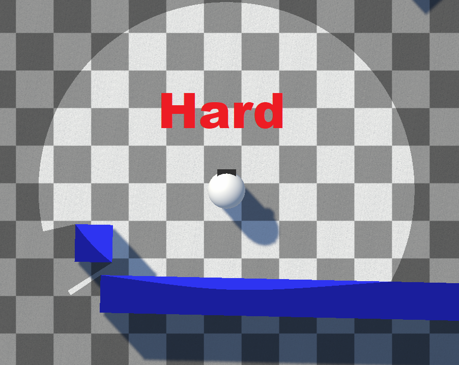
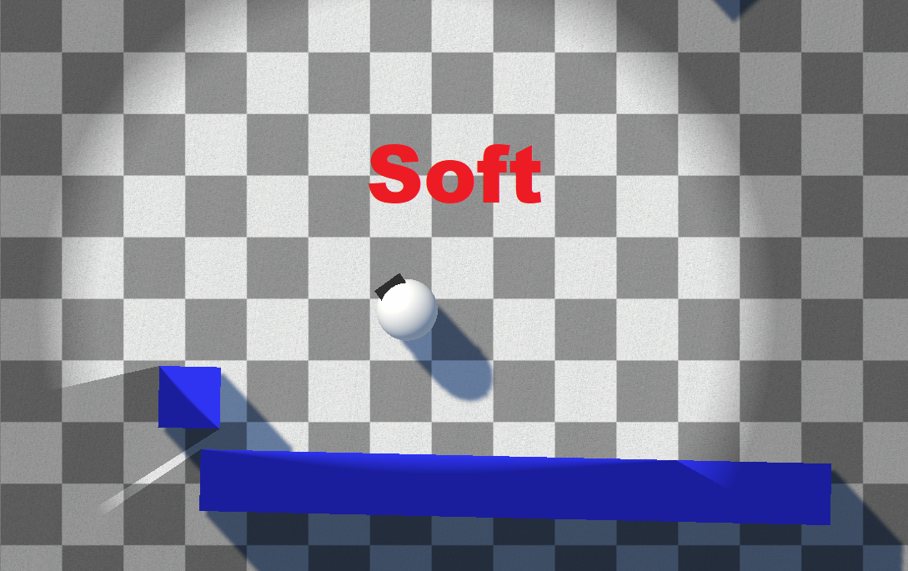

Hard & Soft Fog
The Fog Type (set on Fog Of War World) controls how the edges of revealed areas look. Both styles ship with the package.
Hard
Crisp, sharp edges between revealed and unrevealed areas. Best for a clean, gameplay-readable strategy look.

Soft
Blurs the edges of sight segments for a smooth gradient falloff. The softness is controlled by the revealer's soften distances (Soften Distance, Unobscured Soften Distance, Vision Height Soften Distance, and Inner Soften Angle), and globally by Edge Soften Distance on the Fog Of War World.

Fog Fade Curve
When using soft fog, the Fog Fade curve shapes the falloff from clear to fogged:
- Linear
- Exponential (uses Fog Fade Power)
- Smooth
- Smoother
- Smoothstep (default)
Blend Mode
When multiple revealers overlap, Blend Type controls how their vision combines:
- Additive — overlapping vision adds together (default).
- Max — overlapping vision takes the strongest value.